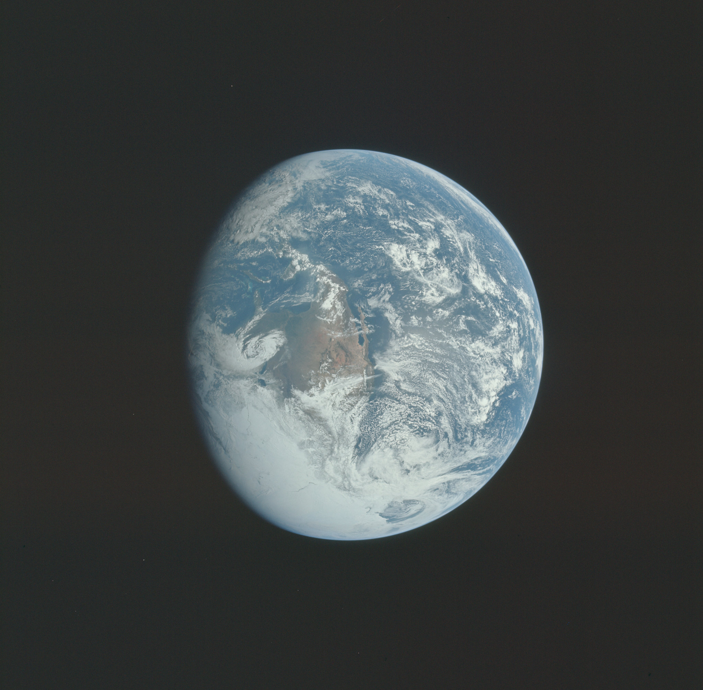
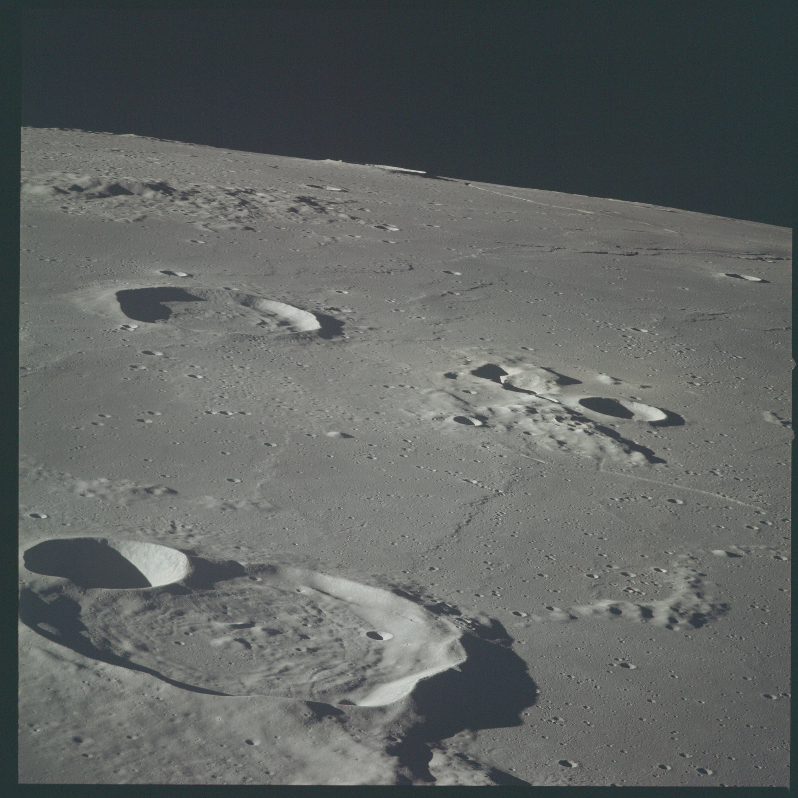
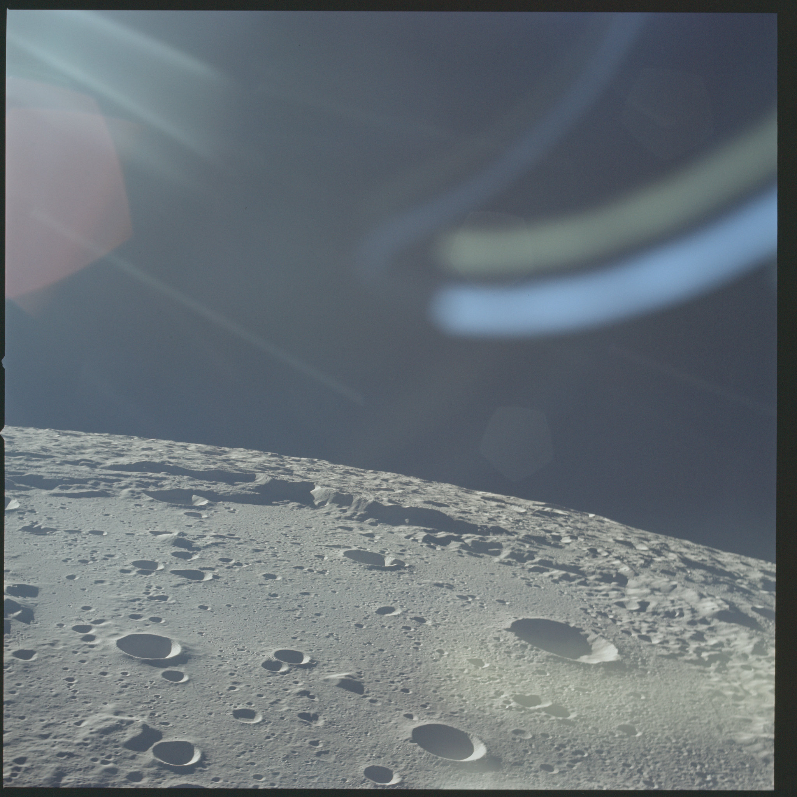

Cómo la evidencia fue transformando nuestra visión del universo.
Qué se pensaba, qué pregunta apareció, qué instrumento permitió probarla, qué evidencia surgió y cómo cambió nuestra percepción del universo.
CÓMO LEER ESTA RUTA
Comprender el universo significa seguir cómo cambian las ideas cuando cambian las pruebas.
Aquí no basta con memorizar fechas. En cada periodo se parte de una idea previa, aparece una pregunta, una herramienta hace posible medir algo nuevo y la evidencia obliga a conservar, corregir o abandonar modelos. El objetivo es entender también los conceptos científicos que hacen posible cada cambio.
IDEA PREVIA→PREGUNTA→HERRAMIENTA O MÉTODO→EVIDENCIA→CAMBIO DE MODELO→NUEVA PERCEPCIÓN→LECCIÓN CRÍTICA
Idea que guía la lectura
La evidencia no solo confirma ideas: a veces obliga a abandonarlas y reorganizar todo el problema.
Pregunta que guía la lectura
¿Qué cambió realmente: el cielo, nuestras herramientas o la forma de interpretar los datos?
Meta del recorrido
Reconocer cómo la astronomía entrenó una forma de pensar basada en pruebas, revisión y cambio de modelo.
1543-1610
El telescopio rompe el cosmos cerrado
Copérnico y Galileo: la Tierra deja de ser el centro obligatorio
CADENA CENTRAL
Geocentrismo → heliocentrismo → telescopio → nuevas observaciones → el modelo antiguo deja de encajar
DESARROLLO
Para entender este periodo
Durante muchos siglos, mirar el cielo parecía confirmar que la Tierra estaba quieta: el Sol, la Luna, las estrellas y los planetas recorrían el firmamento cada día. Esa apariencia cotidiana favoreció los modelos geocéntricos. El sistema de Ptolomeo no era una idea simple ni absurda; utilizaba combinaciones geométricas, como deferentes y epiciclos, para reproducir con bastante éxito las posiciones planetarias observadas. El problema era que describía los movimientos sin explicar de manera física por qué ocurrían.
DESARROLLO
Geocentrismo, heliocentrismo y movimiento aparente
El heliocentrismo de Copérnico propuso reorganizar el sistema: la Tierra también era un planeta y se movía alrededor del Sol. Eso explicaba de manera natural fenómenos como el movimiento retrógrado aparente de Marte: el planeta no necesita detenerse y retroceder realmente; el efecto aparece porque la Tierra, moviéndose en una órbita más interna y rápida, lo adelanta. Sin embargo, el modelo de Copérnico todavía utilizaba órbitas circulares y no era, por sí solo, una demostración definitiva.
El telescopio cambió la discusión porque añadió observaciones que no habían sido accesibles al ojo desnudo. Las fases completas de Venus mostraban que Venus debía situarse a veces al otro lado del Sol respecto de la Tierra. Las lunas de Júpiter demostraban además que podía existir un centro de movimiento distinto de la Tierra. Esas observaciones debilitaron de manera decisiva el universo ptolemaico tradicional, aunque todavía eran compatibles con algunos modelos geoheliocéntricos como el de Tycho Brahe.
CONCEPTO CLAVE
Concepto clave
una observación puede eliminar un modelo sin demostrar de manera exclusiva cuál de los modelos restantes es correcto. Esa diferencia entre "refutar una posibilidad" y "probar una única explicación" será importante en todo el recorrido.

EVIDENCIA VISUAL
Los dibujos lunares de Galileo hicieron visible un cielo con relieve y cambios, no una esfera perfecta.
DESARROLLO
Qué se pensaba antes
Durante siglos, el modelo geocéntrico de tradición ptolemaica situaba a la Tierra inmóvil cerca del centro del cosmos. Era un sistema elaborado y útil para predecir posiciones, pero también estaba unido a una visión en la que los cielos eran perfectos y fundamentalmente distintos de la Tierra.
PREGUNTA ABIERTA
La pregunta y la herramienta
Copérnico propuso en 1543 un sistema heliocéntrico. La idea reorganizaba los movimientos planetarios, pero todavía hacía falta evidencia capaz de distinguir entre modelos rivales. El gran cambio instrumental llegó con el telescopio, inventado en los Países Bajos en 1608 y adaptado por Galileo para observar el cielo en 1609.
IMAGEN EN CONTEXTO
La superficie lunar recuerda el tipo de detalle que el telescopio incorporó a la discusión astronómica.
DESARROLLO
Qué se observó
Galileo encontró montañas y sombras en la Luna, cuatro satélites alrededor de Júpiter y las fases completas de Venus. Las lunas de Júpiter demostraban que no todo giraba alrededor de la Tierra. Las fases de Venus eran incompatibles con la disposición ptolemaica tradicional, aunque por sí solas no distinguían de forma única entre Copérnico y modelos geoheliocéntricos como el de Tycho Brahe.
CAMBIO DE VISIÓN
Qué cambió
El cielo dejó de ser un reino de perfección inmutable y la Tierra perdió su papel de centro necesario. El telescopio mostró que una nueva herramienta podía hacer visibles hechos que la autoridad y la tradición no habían podido resolver.
IMAGEN EN CONTEXTO
Las fases de Venus se volvieron una prueba decisiva contra la disposición ptolemaica tradicional.
PENSAMIENTO CRÍTICO
Percepción y pensamiento crítico
La lección no es que la observación siempre sea simple, sino que una teoría debe enfrentarse a datos que podrían contradecirla. También aprendemos a distinguir entre 'una observación apoya una idea' y 'una observación demuestra de manera exclusiva una teoría'.
PREGUNTA ABIERTA
La pregunta que queda abierta
Una vez que la Tierra dejó de ocupar un lugar inmóvil y privilegiado, apareció un problema aún más profundo: si los planetas realmente se mueven alrededor del Sol, ¿qué reglas gobiernan sus trayectorias? La siguiente parte del recorrido muestra cómo Kepler y Newton transformaron una nueva imagen del sistema solar en una física capaz de predecir su movimiento.
QUÉ DEBEMOS RECORDAR
La lección no es que la observación siempre sea simple, sino que una teoría debe enfrentarse a datos que podrían contradecirla. También aprendemos a distinguir entre 'una observación apoya una idea' y 'una observación demuestra de manera exclusiva una teoría'.
FUENTES CONSULTADAS
Fuentes de este periodo
Referencias principales utilizadas para la explicación y los conceptos científicos.
1Galilei, G. (1610). Sidereus Nuncius. Ediciones digitales históricas.
2Royal Museums Greenwich. Galileo and the telescope. https://www.rmg.co.uk/stories/topics/galileo-telescope
3Stanford Encyclopedia of Philosophy. Copernicus. https://plato.stanford.edu/entries/copernicus/
1543-1610
1609-1687
Kepler y Newton: el cielo obedece leyes
De órbitas perfectas a una física universal
CADENA CENTRAL
Datos precisos → órbitas elípticas → leyes de Kepler → gravitación universal → una misma física para cielo y Tierra
DESARROLLO
Conexión con el periodo anterior
Galileo había mostrado que el antiguo cielo perfecto ya no encajaba con las observaciones, pero todavía faltaba una teoría del movimiento planetario. Saber que la Tierra se mueve no basta: necesitamos describir cómo se mueve y explicar qué fuerza mantiene a los planetas en sus órbitas.
DESARROLLO
De describir posiciones a descubrir leyes
Tycho Brahe había reunido mediciones planetarias de una precisión extraordinaria para su época. Kepler utilizó esos datos y descubrió que Marte no podía ajustarse de manera satisfactoria a una órbita circular. El paso decisivo fue aceptar la evidencia y abandonar la idea filosóficamente atractiva del círculo perfecto. Una elipse es una curva cerrada con dos focos; el Sol ocupa uno de ellos, no el centro geométrico de la órbita.
Las tres leyes de Kepler pueden entenderse así: 1) los planetas se mueven en elipses; 2) barren áreas iguales en tiempos iguales, por lo que se mueven más rápido cuando están más cerca del Sol; y 3) el cuadrado del periodo orbital aumenta con el cubo del tamaño de la órbita: T^2 es proporcional a a^3. Esta tercera relación conecta tiempo y distancia con una regularidad matemática que todos los planetas comparten.
DESARROLLO
Newton explica por qué
Kepler describió la regularidad; Newton proporcionó una explicación física. Su ley de gravitación universal afirma que dos masas se atraen con una fuerza que aumenta con sus masas y disminuye con el cuadrado de la distancia: F = G m1 m2 / r^2. Combinada con sus leyes del movimiento, esta idea permite entender una órbita como una caída continua: el planeta cae hacia el Sol, pero posee una velocidad lateral suficiente para ir "fallando" continuamente el impacto.
EVIDENCIA VISUAL
Newton convirtió las regularidades orbitales en una física universal.
CONCEPTO CLAVE
Concepto clave
la gran unificación de Newton fue mostrar que la misma física explica una manzana que cae, la Luna alrededor de la Tierra y los planetas alrededor del Sol. El cielo dejó de necesitar reglas especiales.
DESARROLLO
El problema
Los modelos astronómicos podían ajustar observaciones mediante combinaciones geométricas, pero seguía abierta una pregunta: ¿existían reglas físicas simples detrás de los movimientos planetarios?
DESARROLLO
Kepler y los datos de Tycho
Johannes Kepler trabajó con las mediciones extremadamente precisas de Tycho Brahe. Cuando Marte no encajaba perfectamente en una órbita circular, Kepler no corrigió los datos para salvar la figura preferida: abandonó el círculo y formuló órbitas elípticas, la ley de áreas iguales y una relación matemática entre el periodo y la distancia orbital.
IMAGEN EN CONTEXTO
Las órbitas elípticas muestran cómo los datos obligaron a abandonar el círculo perfecto.
DESARROLLO
Newton unifica el problema
En 1687 Isaac Newton publicó los Principia. Sus leyes del movimiento y la gravitación universal mostraron que la caída de una piedra, la órbita de la Luna y el movimiento de los planetas podían entenderse dentro de una misma física.
CAMBIO DE VISIÓN
Cambio de visión
El cielo dejó de ser un dominio gobernado por reglas especiales. La naturaleza podía describirse con leyes matemáticas universales.

IMAGEN EN CONTEXTO
La Luna y los planetas podían explicarse con las mismas leyes físicas.
PENSAMIENTO CRÍTICO
Lección crítica
Cuando datos de buena calidad contradicen una preferencia estética, la ciencia debe revisar el modelo. Una explicación gana fuerza cuando conecta fenómenos que antes parecían separados.
PREGUNTA ABIERTA
La pregunta que queda abierta
Con Kepler y Newton ya podíamos predecir movimientos, pero una estrella seguía siendo, en gran medida, un punto de luz. ¿De qué está hecha? ¿Qué temperatura tiene? ¿Se mueve hacia nosotros o se aleja? El siguiente salto consistirá en aprender a leer la información escondida dentro de la luz.
QUÉ DEBEMOS RECORDAR
Cuando datos de buena calidad contradicen una preferencia estética, la ciencia debe revisar el modelo. Una explicación gana fuerza cuando conecta fenómenos que antes parecían separados.
FUENTES CONSULTADAS
Fuentes de este periodo
Referencias principales utilizadas para la explicación y los conceptos científicos.
1University of Cambridge Digital Library. Newton's Principia. https://cudl.lib.cam.ac.uk/collections/newton
2NASA. Orbits and Kepler's laws. https://science.nasa.gov/solar-system/orbits-and-keplers-laws/
3Encyclopaedia Britannica. Johannes Kepler. https://www.britannica.com/biography/Johannes-Kepler
1609-1687
1666-1860
La luz se convierte en información
Newton, Fraunhofer, Kirchhoff y Bunsen: las estrellas dejan de ser puntos misteriosos
CADENA CENTRAL
Prisma → espectro → líneas oscuras → huellas químicas → composición estelar a distancia
DESARROLLO
Conexión con lo anterior
Las leyes de Newton hicieron al cielo calculable, pero aún no lo hicieron comprensible en todos sus aspectos. Conocer una órbita no nos dice de qué está hecho un astro. Para responder preguntas físicas sobre objetos lejanos, la astronomía necesitaba convertir la luz en una fuente de datos.
DESARROLLO
Qué es un espectro
La luz visible que percibimos como blanca puede separarse en colores porque contiene distintas longitudes de onda. Un prisma dispersa esas longitudes de onda y produce un espectro. Con el tiempo se comprendió que la luz visible es sólo una parte del espectro electromagnético, pero ya en el siglo XIX el análisis espectral abrió una idea revolucionaria: distintos materiales interactúan con la luz de maneras características.
Cuando un gas caliente y poco denso emite luz, puede producir líneas brillantes en longitudes de onda concretas. Cuando una fuente continua atraviesa un gas más frío, ese gas puede absorber exactamente ciertas longitudes y dejar líneas oscuras. Los átomos no absorben o emiten cualquier cantidad de energía; cada elemento tiene un conjunto característico de transiciones. Por eso las líneas espectrales funcionan como una especie de huella digital química.
DESARROLLO
La luz también informa sobre temperatura y movimiento
La forma general del espectro está relacionada con la temperatura, y el desplazamiento de las líneas permite medir movimiento a lo largo de nuestra línea de visión. Si las líneas aparecen desplazadas hacia longitudes de onda mayores hablamos de corrimiento al rojo; hacia longitudes menores, de corrimiento al azul. Más adelante este principio será esencial para estudiar el movimiento de las galaxias y la expansión del universo.
EVIDENCIA VISUAL
Las líneas de Fraunhofer mostraron que la luz contiene información física.
CONCEPTO CLAVE
Concepto clave
la astronomía moderna no necesita tocar una estrella para estudiarla. Necesita conocer la física que conecta una señal recibida con el objeto que la produjo.
DESARROLLO
La limitación antigua
Observar una estrella permitía medir su posición y brillo, pero parecía imposible responder qué sustancias la formaban. Viajar hasta una estrella era impensable.
DESARROLLO
Del prisma a las líneas
Newton mostró que la luz blanca podía descomponerse en colores. A comienzos del siglo XIX Joseph von Fraunhofer cartografió numerosas líneas oscuras en el espectro solar. Más tarde Kirchhoff y Bunsen relacionaron líneas de emisión y absorción con elementos químicos concretos.
IMAGEN EN CONTEXTO
El cielo dejó de ser sólo una imagen: la luz podía convertirse en datos.
DESARROLLO
La nueva herramienta
La espectroscopia convirtió la luz en una especie de código físico. Un espectro permite inferir composición, temperatura y movimiento sin tocar el objeto.
CAMBIO DE VISIÓN
Cambio de visión
Las estrellas dejaron de ser luces inaccesibles y se convirtieron en objetos físicos analizables. El universo podía funcionar como un laboratorio remoto.
IMAGEN EN CONTEXTO
Los telescopios modernos continúan esa misma lógica de leer señales lejanas.
PENSAMIENTO CRÍTICO
Lección crítica
La evidencia no tiene que llegar en forma de contacto directo. Una señal puede contener información sobre la causa que la produjo, siempre que conozcamos el mecanismo que relaciona ambas.
PREGUNTA ABIERTA
La pregunta que queda abierta
Aprender a interpretar la luz fue un enorme avance, pero las observaciones seguían dependiendo mucho del ojo y de las notas del observador. La siguiente parte del recorrido muestra cómo la fotografía convirtió el cielo en un registro permanente, comparable y medible.
QUÉ DEBEMOS RECORDAR
La evidencia no tiene que llegar en forma de contacto directo. Una señal puede contener información sobre la causa que la produjo, siempre que conozcamos el mecanismo que relaciona ambas.
FUENTES CONSULTADAS
Fuentes de este periodo
Referencias principales utilizadas para la explicación y los conceptos científicos.
1Royal Society. Newton and optics. https://royalsociety.org/about-us/who-we-are/history/
2Fraunhofer-Gesellschaft. Joseph von Fraunhofer. https://www.fraunhofer.de/en/about-fraunhofer/profile-structure/history/joseph-von-fraunhofer.html
3NASA. Spectroscopy and the electromagnetic spectrum. https://science.nasa.gov/ems/
1666-1860
1839-1900
La fotografía le da memoria al cielo
Placas astronómicas, exposiciones largas y observaciones que pueden revisarse
La espectroscopia convirtió la luz en información física. Faltaba, sin embargo, una manera de conservar esa información de forma objetiva. Antes de la fotografía, muchos detalles astronómicos dependían de dibujos, descripciones y de la memoria del observador.
DESARROLLO
Por qué una placa fotográfica puede ver más que el ojo
El ojo humano integra luz sólo durante intervalos breves. Una placa fotográfica, en cambio, puede permanecer expuesta durante minutos u horas y acumular señal. Eso permite registrar objetos demasiado débiles para ser percibidos directamente. La fotografía no sólo crea una imagen: convierte una observación fugaz en un objeto que puede almacenarse, medirse y ser revisado por otras personas años después.
Las placas hicieron posible comparar el mismo campo del cielo en fechas distintas. Así podían identificarse estrellas variables, objetos que se desplazaban y cambios de brillo. También permitieron realizar mediciones repetidas con nuevas técnicas. En términos modernos, la astronomía comenzó a construir grandes bases de datos antes de que existieran las computadoras electrónicas.
DESARROLLO
Medir brillo no es lo mismo que conocer luminosidad
Una estrella puede verse débil porque emite poca energía o simplemente porque está muy lejos. Esa diferencia entre brillo aparente y luminosidad intrínseca será central en los apartados siguientes. Precisamente el análisis de miles de placas permitió descubrir estrellas variables cuyo ritmo de pulsación revelaría su verdadera luminosidad.
EVIDENCIA VISUAL
Los observatorios y archivos fotográficos permitieron conservar y volver a medir el cielo.
CONCEPTO CLAVE
Concepto clave
registrar datos aumenta la reproducibilidad. Otra persona puede volver a medir la misma evidencia y cuestionar o confirmar una conclusión.
DESARROLLO
Antes de la fotografía
Una observación dependía en gran medida del ojo, el dibujo y las notas del astrónomo. Dos personas podían describir de manera distinta un mismo objeto.
DESARROLLO
La nueva capacidad
Las primeras fotografías astronómicas del siglo XIX abrieron la posibilidad de conservar la luz recibida por un telescopio. Las placas fotográficas permitían exposiciones largas, acumulando señales demasiado débiles para el ojo.
IMAGEN EN CONTEXTO
Henrietta Leavitt trabajó con grandes colecciones de placas y estrellas variables.
DESARROLLO
Por qué fue una revolución
Una placa podía guardarse, compararse con otra tomada años después y medirse nuevamente con técnicas futuras. El cielo adquirió una memoria documental.
DESARROLLO
Archivos y ciencia colectiva
Colecciones como las placas de Harvard permitieron estudiar miles de estrellas y crear grandes archivos. El trabajo de los llamados 'computadores' astronómicos, muchas de ellas mujeres, hizo posible clasificar y medir enormes volúmenes de información.
IMAGEN EN CONTEXTO
La fotografía inició una cultura de datos astronómicos que hoy continúa con observatorios digitales.
PENSAMIENTO CRÍTICO
Lección crítica
Registrar evidencia permite que otros la revisen. Una observación reproducible es más fuerte que un recuerdo o una impresión individual.
PREGUNTA ABIERTA
La pregunta que queda abierta
Con fotografías y espectros, la astronomía podía medir cada vez mejor. Pero seguía existiendo una barrera: ¿cómo medir distancias enormes? Antes de responderla, el capítulo siguiente introduce una transformación de la física que también cambiaría nuestra idea de espacio, tiempo y gravedad.
QUÉ DEBEMOS RECORDAR
Registrar evidencia permite que otros la revisen. Una observación reproducible es más fuerte que un recuerdo o una impresión individual.
FUENTES CONSULTADAS
Fuentes de este periodo
Referencias principales utilizadas para la explicación y los conceptos científicos.
1Smithsonian National Air and Space Museum. Early astronomical photography. https://airandspace.si.edu/
2Harvard College Observatory Plate Stacks. https://platestacks.cfa.harvard.edu/
3Library of Congress. History of photography. https://www.loc.gov/pictures/
1839-1900
1905-1919
La relatividad cambia espacio, tiempo y gravedad
Einstein y el eclipse de 1919: el escenario del universo deja de ser rígido
CADENA CENTRAL
Relatividad especial → relatividad general → gravedad como geometría → predicción de desviación de la luz → prueba observacional
DESARROLLO
Una línea de investigación que ocurre en paralelo
Mientras la astronomía aprendía a registrar y analizar la luz, la física estaba revisando sus propios fundamentos. Las ideas de Einstein no reemplazaron de inmediato a Newton para los problemas cotidianos; ampliaron el marco cuando intervienen velocidades cercanas a la de la luz, campos gravitatorios intensos o mediciones de gran precisión.
DESARROLLO
Relatividad especial y relatividad general no son lo mismo
La relatividad especial, publicada en 1905, parte de dos ideas: las leyes de la física tienen la misma forma para observadores inerciales y la velocidad de la luz en el vacío tiene el mismo valor para todos ellos. De esas premisas se desprende que espacio y tiempo no son absolutos por separado: medidas de duración y longitud dependen del estado de movimiento. No significa que "todo sea relativo"; significa que existen reglas precisas para transformar las mediciones entre observadores.
La relatividad general, formulada en 1915, aborda la gravedad. En lugar de tratarla simplemente como una fuerza a distancia, describe cómo masa y energía modifican la geometría del espacio-tiempo. Los cuerpos y la luz siguen las trayectorias más naturales posibles dentro de esa geometría, llamadas geodésicas. Esta idea explica por qué la luz puede desviarse al pasar cerca de una gran masa aunque los fotones no tengan masa en reposo.
DESARROLLO
Por qué el eclipse de 1919 importó
Durante un eclipse total el brillo solar queda bloqueado y pueden fotografiarse estrellas aparentemente cercanas al borde del Sol. Comparando sus posiciones con fotografías tomadas cuando el Sol no estaba en esa región, se podía comprobar si la gravedad solar desviaba su luz. Las mediciones de 1919 fueron históricas y compatibles con la relatividad general, aunque las pruebas modernas son muchísimo más precisas.
EVIDENCIA VISUAL
El eclipse de 1919 permitió contrastar una predicción de la relatividad general.
CONCEPTO CLAVE
Concepto clave
una teoría científica fuerte no sólo explica lo ya conocido; también realiza predicciones que podrían resultar falsas. La relatividad será además la base teórica para comprender expansión cósmica, lentes gravitacionales, agujeros negros y ondas gravitacionales.
DESARROLLO
La idea previa
En la física clásica, espacio y tiempo podían tratarse como un escenario fijo. La gravedad newtoniana funcionaba extraordinariamente bien, pero dejaba problemas conceptuales y pequeñas discrepancias.
DESARROLLO
Einstein cambia el marco
En 1905 la relatividad especial unió espacio y tiempo. En 1915 la relatividad general describió la gravedad como curvatura del espacio-tiempo producida por masa y energía.
IMAGEN EN CONTEXTO
La misma observación podía medirse y compararse con una predicción cuantitativa.
DESARROLLO
La prueba del eclipse
La teoría predecía que la luz de estrellas pasaría desviada cerca del Sol. Durante el eclipse total de 1919, equipos británicos observaron el campo estelar próximo al Sol desde Sobral y la isla de Príncipe. Los resultados fueron compatibles con la predicción de Einstein, aunque su precisión era limitada comparada con pruebas posteriores.
CAMBIO DE VISIÓN
Cambio de visión
El universo ya no era un escenario pasivo. La geometría misma podía responder a la materia y afectar el camino de la luz.
IMAGEN EN CONTEXTO
La relatividad amplió el marco físico con el que interpretamos el universo.
PENSAMIENTO CRÍTICO
Lección crítica
Una teoría poderosa debe arriesgar predicciones. También debemos recordar que una prueba histórica puede ser importante sin ser perfecta; la confianza científica aumenta mediante mediciones posteriores más precisas.
PREGUNTA ABIERTA
La pregunta que queda abierta
Einstein cambió el marco físico del universo, pero todavía necesitábamos saber su escala real. ¿Cómo medir algo que está demasiado lejos para aplicar una regla física? La siguiente parte del recorrido introduce la primera pieza fundamental de la llamada escalera de distancias cósmicas.
QUÉ DEBEMOS RECORDAR
Una teoría poderosa debe arriesgar predicciones. También debemos recordar que una prueba histórica puede ser importante sin ser perfecta; la confianza científica aumenta mediante mediciones posteriores más precisas.
FUENTES CONSULTADAS
Fuentes de este periodo
Referencias principales utilizadas para la explicación y los conceptos científicos.
1Einstein Online, Max Planck Institute. General relativity. https://www.einstein-online.info/en/
2Royal Society. The 1919 eclipse expedition. https://royalsocietypublishing.org/
3NASA. Testing general relativity. https://science.nasa.gov/universe/black-holes/
1905-1919
1908-1912
Henrietta Leavitt: medir lo que parecía inalcanzable
Las Cefeidas y la escala de distancias del universo
La astronomía podía medir posiciones y brillo, pero convertir esas observaciones en distancias era difícil. La paralaje -el pequeño cambio aparente de posición de una estrella cuando la Tierra se observa desde puntos opuestos de su órbita- funciona sólo cuando el ángulo es suficientemente grande para medirse. Cuanto más lejos está la estrella, menor es la paralaje.
DESARROLLO
Brillo aparente, luminosidad y la ley del inverso del cuadrado
La luminosidad es la energía total que un objeto emite por unidad de tiempo; el brillo aparente es la energía que recibimos. Si una fuente emite la misma luminosidad en todas direcciones, su luz se reparte sobre superficies cada vez mayores. Por eso el flujo disminuye aproximadamente como F = L / (4 pi d^2). Si conociéramos L y midiéramos F, podríamos estimar la distancia d.
DESARROLLO
Por qué las Cefeidas son tan útiles
Una Cefeida es una estrella que se expande y contrae de manera regular, cambiando su brillo. Henrietta Leavitt encontró que, entre las Cefeidas que estudiaba, las que tardaban más en completar un ciclo eran intrínsecamente más luminosas. Como las estrellas de una misma Nube de Magallanes estaban aproximadamente a una distancia común, las diferencias de brillo podían atribuirse principalmente a diferencias reales de luminosidad.
Después de calibrar la relación periodo-luminosidad con objetos de distancia conocida, basta medir el periodo de una Cefeida para inferir su luminosidad aproximada. Comparando esa luminosidad con su brillo observado obtenemos una distancia. Este tipo de objeto se denomina "candela estándar" o, con más precisión, indicador de distancia calibrable.
EVIDENCIA VISUAL
Henrietta Leavitt encontró una relación que transformó estrellas variables en indicadores de distancia.
CONCEPTO CLAVE
Concepto clave
la escalera de distancias cósmicas funciona enlazando métodos. Un método cercano calibra otro que alcanza más lejos. Ninguna regla única mide todo el universo.
DESARROLLO
El problema de la distancia
La paralaje funciona para estrellas relativamente cercanas, pero se vuelve demasiado pequeña para medir grandes distancias galácticas y extragalácticas.
DESARROLLO
El descubrimiento
Henrietta Swan Leavitt estudió estrellas variables en las Nubes de Magallanes. Como las estrellas de una misma nube estaban aproximadamente a una distancia comparable, pudo comparar su brillo relativo y encontró que las Cefeidas de mayor periodo eran intrínsecamente más luminosas.
IMAGEN EN CONTEXTO
Las Cefeidas convirtieron el ritmo de variación en una regla para medir el espacio.
DESARROLLO
La nueva regla
Una vez calibrada, la relación periodo-luminosidad permitió convertir una propiedad temporal -el ritmo de pulsación- en una herramienta de distancia.
CAMBIO DE VISIÓN
Cambio de visión
El universo ganó profundidad medible. Las estrellas variables dejaron de ser curiosidades y se transformaron en reglas graduadas del espacio.
IMAGEN EN CONTEXTO
Medir distancias permitió ampliar la escala del universo conocido.
PENSAMIENTO CRÍTICO
Lección crítica
A veces un gran avance no consiste en observar un objeto nuevo, sino en descubrir una relación entre variables ya conocidas.
PREGUNTA ABIERTA
La pregunta que queda abierta
La herramienta de Leavitt transformó una pregunta filosófica en una medición posible. Si las nebulosas espirales contenían Cefeidas, podríamos saber si estaban dentro de la Vía Láctea o muchísimo más lejos. Esa será la clave del capítulo siguiente.
QUÉ DEBEMOS RECORDAR
A veces un gran avance no consiste en observar un objeto nuevo, sino en descubrir una relación entre variables ya conocidas.
FUENTES CONSULTADAS
Fuentes de este periodo
Referencias principales utilizadas para la explicación y los conceptos científicos.
1Harvard & Smithsonian Center for Astrophysics. Henrietta Leavitt. https://www.cfa.harvard.edu/
3Leavitt, H. S., & Pickering, E. C. (1912). Periods of 25 variable stars in the Small Magellanic Cloud.
1908-1912
1920-1924
La Vía Láctea deja de ser todo el universo
El Gran Debate y Andrómeda: una galaxia entre muchas
CADENA CENTRAL
Debate sobre nebulosas → telescopio Hooker → Cefeida en Andrómeda → distancia enorme → universo de galaxias
DESARROLLO
Conexión directa con Leavitt
Este periodo depende del anterior. Sin una forma de estimar distancias a partir de Cefeidas, la discusión sobre las nebulosas espirales habría seguido siendo mucho más ambigua. El llamado Gran Debate de 1920 enfrentaba, entre otras cuestiones, dos ideas: una Vía Láctea muy grande que contuviera las nebulosas espirales, o un universo formado por numerosos "universos isla" separados.
DESARROLLO
Qué significa demostrar que Andrómeda está fuera
Hubble identificó estrellas variables en Andrómeda y reconoció al menos una Cefeida. Al aplicar la relación periodo-luminosidad, obtuvo una distancia demasiado grande para que Andrómeda formara parte de la Vía Láctea según el tamaño aceptado entonces. Las estimaciones históricas de distancia todavía eran imperfectas, pero el resultado cualitativo era contundente: Andrómeda era otro sistema estelar gigantesco.
Ese descubrimiento cambió la escala del problema. Una galaxia es un sistema compuesto por estrellas, gas, polvo y otros componentes unidos gravitacionalmente. La Vía Láctea pasó de ser "el universo" a ser una galaxia entre muchas. A partir de entonces, las galaxias podían utilizarse como objetos para estudiar la estructura del cosmos a escalas mucho mayores.
CONCEPTO CLAVE
Concepto clave
en ciencia, un cambio de escala puede cambiar también las preguntas. Cuando descubrimos que existen muchas galaxias, ya no basta preguntar cómo funciona una estrella o un sistema planetario; debemos preguntar cómo se distribuyen y se mueven esas galaxias.
EVIDENCIA VISUAL
Andrómeda dejó de ser una nebulosa ambigua y pasó a entenderse como otra galaxia.
DESARROLLO
El Gran Debate
En 1920 Harlow Shapley y Heber Curtis discutieron el tamaño de la Vía Láctea y la naturaleza de las nebulosas espirales. Ninguno poseía todavía toda la evidencia necesaria, y cada uno acertó en partes distintas del problema.
DESARROLLO
La observación decisiva
En 1923 Edwin Hubble identificó una estrella variable Cefeida en Andrómeda utilizando el telescopio Hooker de 100 pulgadas de Mount Wilson. Aplicando la relación de Leavitt, la distancia resultó demasiado grande para que Andrómeda perteneciera a la Vía Láctea.
IMAGEN EN CONTEXTO
La Vía Láctea dejó de ser sinónimo de universo.
CAMBIO DE VISIÓN
Cambio de visión
Nuestra galaxia dejó de ser sinónimo de universo. Andrómeda era otro gran sistema estelar, y existían muchos más.
CAMBIO DE VISIÓN
Cambio de escala
El cosmos se volvió inmensamente mayor de una sola vez. La Vía Láctea pasó de ser 'todo' a ser 'una entre muchas'.
IMAGEN EN CONTEXTO
Los grandes telescopios hicieron posible resolver estrellas variables en galaxias externas.
PENSAMIENTO CRÍTICO
Lección crítica
Los debates científicos no se resuelven por quién argumenta mejor, sino cuando aparece evidencia capaz de discriminar entre interpretaciones.
PREGUNTA ABIERTA
La pregunta que queda abierta
En paralelo, Vesto Slipher llevaba años midiendo algo extraño en los espectros de las nebulosas espirales: muchas mostraban grandes corrimientos al rojo. Una vez que supimos que esas nebulosas eran galaxias externas y pudimos estimar sus distancias, distancia y movimiento pudieron combinarse. De esa unión nació la idea de un universo en expansión.
QUÉ DEBEMOS RECORDAR
Los debates científicos no se resuelven por quién argumenta mejor, sino cuando aparece evidencia capaz de discriminar entre interpretaciones.
FUENTES CONSULTADAS
Fuentes de este periodo
Referencias principales utilizadas para la explicación y los conceptos científicos.
2NASA. The Andromeda Galaxy and Hubble. https://science.nasa.gov/universe/galaxies/
3American Astronomical Society. The Great Debate. https://aas.org/
1920-1924
1912-1929
El universo empieza a expandirse
Slipher, Lemaître y Hubble: cae la idea de un cosmos estático
CADENA CENTRAL
Corrimientos al rojo → velocidades de galaxias → distancias → relación distancia-velocidad → expansión cósmica
DESARROLLO
Las piezas que ahora pueden unirse
El periodo anterior proporcionó distancias extragalácticas. La espectroscopia, presentada antes, proporcionaba corrimientos de las líneas espectrales. Juntas, ambas herramientas permitieron comparar qué tan lejos estaba una galaxia y cómo cambiaba su luz.
DESARROLLO
Qué es el corrimiento al rojo
Una línea espectral tiene una longitud de onda conocida en el laboratorio. Si esa línea se observa a una longitud mayor, decimos que presenta corrimiento al rojo. Para velocidades relativamente pequeñas respecto de la luz, el efecto puede interpretarse de manera semejante al Doppler: un alejamiento produce un desplazamiento hacia longitudes mayores. En cosmología, a grandes distancias, el corrimiento también refleja la expansión del propio espacio durante el viaje de la luz.
DESARROLLO
La relación distancia-velocidad
Lemaître mostró teóricamente que las ecuaciones de la relatividad general permitían universos dinámicos y relacionó expansión con observaciones disponibles. Hubble publicó en 1929 una relación observacional: las galaxias más distantes tendían a mostrar mayores velocidades de recesión. Para distancias relativamente cercanas puede escribirse de manera aproximada v = H0 d, donde H0 es el parámetro de Hubble actual.
La expansión no significa que todas las galaxias salgan disparadas desde un punto central dentro de un espacio vacío. La analogía más útil es pensar en una cuadrícula cuya escala aumenta: las distancias entre puntos no ligados crecen. Cada observador situado en una galaxia suficientemente alejada de estructuras locales vería, en promedio, a otras galaxias distantes alejarse. No existe un centro de expansión dentro del espacio observable en el sentido cotidiano.
EVIDENCIA VISUAL
Galaxias, distancias y espectros permitieron reconocer un universo dinámico.
CONCEPTO CLAVE
Concepto clave
una galaxia individual puede tener movimientos locales hacia nosotros o hacia otras galaxias. La ley de Hubble-Lemaître describe el comportamiento promedio a gran escala, no cada movimiento particular.
DESARROLLO
Las primeras velocidades
Vesto Slipher midió desde 1912 los espectros de nebulosas espirales y descubrió que muchas mostraban corrimientos al rojo, interpretados como grandes velocidades de alejamiento.
DESARROLLO
La teoría se vuelve dinámica
En 1927 Georges Lemaître utilizó la relatividad general para desarrollar un universo en expansión y relacionó esa expansión con observaciones disponibles.
IMAGEN EN CONTEXTO
La expansión transformó el cosmos estático en una historia física.
DESARROLLO
La relación observacional
En 1929 Edwin Hubble publicó una relación entre distancia y velocidad de recesión. Muchas de las velocidades procedían del trabajo de Slipher; con el tiempo la relación pasó a llamarse ley de Hubble-Lemaître.
DESARROLLO
Qué significa expandirse
No debemos imaginar simplemente galaxias saliendo disparadas a través de un espacio estático desde un único punto. En cosmología, la escala del propio espacio entre sistemas no ligados aumenta con el tiempo.
IMAGEN EN CONTEXTO
La luz de galaxias lejanas conserva información sobre su movimiento y distancia.
PENSAMIENTO CRÍTICO
Lección crítica
Una medición puede adquirir un nuevo significado cuando se combina con un marco teórico. Los datos y las teorías se necesitan mutuamente.
PREGUNTA ABIERTA
La pregunta que queda abierta
Si el universo es hoy más grande que en el pasado, entonces al retroceder en el tiempo debió ser más denso. ¿También fue más caliente? ¿Ha existido siempre con el mismo aspecto o tuvo una historia física? La siguiente parte del recorrido enfrenta esas preguntas mediante modelos rivales y una predicción decisiva: la radiación cósmica de fondo.
QUÉ DEBEMOS RECORDAR
Una medición puede adquirir un nuevo significado cuando se combina con un marco teórico. Los datos y las teorías se necesitan mutuamente.
FUENTES CONSULTADAS
Fuentes de este periodo
Referencias principales utilizadas para la explicación y los conceptos científicos.
1NASA. Edwin Hubble and the expanding universe. https://science.nasa.gov/universe/galaxies/
2ESA. The expanding Universe. https://www.esa.int/Science_Exploration/Space_Science
3NASA GISS. Georges Lemaître and cosmology. https://www.giss.nasa.gov/
1912-1929
1930-1965
¿Tuvo el universo un comienzo?
Big Bang, estado estacionario y radiación cósmica de fondo
CADENA CENTRAL
Universo en expansión → modelos rivales → predicción de radiación fósil → señal de microondas → universo caliente en el pasado
DESARROLLO
Del universo en expansión a un universo con historia
La expansión cambia por completo la pregunta cosmológica. Si las distancias cósmicas aumentan con el tiempo, un universo más joven debió tener la materia más concentrada. Los modelos de Big Bang no describen una bomba explotando desde un punto hacia un espacio vacío; describen un universo que, al retroceder en el tiempo, alcanza estados cada vez más densos y calientes.
DESARROLLO
Qué predice un pasado caliente
Cuando el universo era muy caliente, la materia estaba ionizada y la luz interactuaba constantemente con partículas cargadas. Al expandirse y enfriarse, llegó un momento en que electrones y núcleos pudieron formar átomos neutros. La radiación quedó entonces mucho más libre para viajar. La expansión posterior estiró sus longitudes de onda hasta la región de microondas. Esa señal es la radiación cósmica de fondo.
Un modelo de universo caliente también explica por qué existen determinadas proporciones de elementos ligeros, como hidrógeno, helio y pequeñas cantidades de litio, producidos durante los primeros minutos. La radiación de fondo y la nucleosíntesis primordial son ejemplos de predicciones conectadas con un mismo marco histórico.
DESARROLLO
Por qué el estado estacionario era una alternativa real
El estado estacionario aceptaba la expansión, pero proponía que el universo mantuviera propiedades promedio constantes mediante creación continua de materia. Era una hipótesis científica porque producía consecuencias observables. La detección de una radiación de microondas casi uniforme, compatible con un pasado caliente, favoreció fuertemente la cosmología del Big Bang y dejó al estado estacionario sin una explicación comparable de esa señal.
EVIDENCIA VISUAL
El universo temprano dejó una huella observable que podía compararse con modelos rivales.
CONCEPTO CLAVE
Concepto clave
"Big Bang" nombra un modelo evolutivo del universo temprano. No significa que la ciencia conozca con certeza una "primera causa" ni que todas las preguntas sobre el instante inicial estén resueltas.
DESARROLLO
Dos grandes ideas
El modelo de un universo caliente y evolutivo competía con el estado estacionario, propuesto en 1948, donde el universo se expandía pero mantenía propiedades globales constantes gracias a creación continua de materia.
DESARROLLO
Una predicción comprobable
Los modelos de universo caliente implicaban que debía quedar una radiación fósil enfriada por la expansión. Alpher y Herman estimaron a finales de los años cuarenta que esa radiación tendría hoy una temperatura de sólo unos pocos kelvin.
IMAGEN EN CONTEXTO
La cosmología moderna conecta observaciones actuales con un pasado mucho más caliente.
DESARROLLO
1965: una señal inesperada
Arno Penzias y Robert Wilson encontraron un exceso de microondas casi uniforme usando una antena de Bell Labs. Un grupo de Princeton interpretó esa señal como la radiación cósmica de fondo.
CAMBIO DE VISIÓN
Qué cambió
La radiación cósmica de fondo dio un apoyo enorme a un universo que había sido mucho más caliente y denso. El estado estacionario perdió su principal competencia observacional.
IMAGEN EN CONTEXTO
El cielo completo se convirtió en una fuente de evidencia sobre la historia cósmica.
PENSAMIENTO CRÍTICO
Lección crítica
Las teorías rivales son más útiles cuando producen predicciones diferentes. También una anomalía instrumental aparente puede convertirse en descubrimiento si se investiga en lugar de descartarla como ruido.
PREGUNTA ABIERTA
La pregunta que queda abierta
Hasta aquí gran parte de la historia se apoyaba en luz visible y espectros ópticos. Pero nuestros ojos detectan sólo una fracción diminuta de la radiación existente. La siguiente parte del recorrido muestra qué ocurrió cuando la astronomía amplió sus sentidos al radio, ultravioleta, rayos X y otras bandas.
QUÉ DEBEMOS RECORDAR
Las teorías rivales son más útiles cuando producen predicciones diferentes. También una anomalía instrumental aparente puede convertirse en descubrimiento si se investiga en lugar de descartarla como ruido.
FUENTES CONSULTADAS
Fuentes de este periodo
Referencias principales utilizadas para la explicación y los conceptos científicos.
1Nobel Prize. The Nobel Prize in Physics 1978. https://www.nobelprize.org/prizes/physics/1978/summary/
Radio, rayos X y otras longitudes de onda: nuestros ojos sólo ven una fracción
CADENA CENTRAL
Luz visible limitada → radioastronomía → observación espacial → rayos X y otras bandas → universo multicolor e invisible
DESARROLLO
Por qué "ver" no significa sólo usar ojos
La luz visible ocupa una pequeña franja del espectro electromagnético. Radio, microondas, infrarrojo, visible, ultravioleta, rayos X y gamma son manifestaciones del mismo fenómeno electromagnético, diferenciadas por su longitud de onda y frecuencia. En general, frecuencias más altas corresponden a fotones de mayor energía.
DESARROLLO
Cada banda revela procesos distintos
El radio puede mostrar electrones acelerados en campos magnéticos y gas frío; el infrarrojo permite estudiar polvo, objetos fríos y luz desplazada por la expansión; el ultravioleta revela estrellas muy calientes; los rayos X aparecen en plasmas de millones de grados, discos de acreción y objetos compactos; los rayos gamma están asociados a algunos de los procesos más energéticos del cosmos. Un mismo objeto puede verse radicalmente distinto según la banda utilizada.
La atmósfera terrestre es transparente principalmente a ciertas regiones de radio y luz visible, pero absorbe buena parte del ultravioleta, los rayos X y gamma. Por eso la astronomía espacial no fue sólo una mejora de resolución: permitió observar tipos de radiación que desde el suelo eran inaccesibles.
DESARROLLO
Jansky y una nueva clase de objeto astronómico
Jansky no buscaba estrellas; investigaba interferencias de radio. Descubrió que una señal variaba con el día sideral, es decir, con la rotación de la Tierra respecto de las estrellas y no respecto del Sol. Esa periodicidad indicaba un origen celeste. Así nació una disciplina que ya no dependía de lo que el ojo humano podía percibir.
EVIDENCIA VISUAL
La radioastronomía amplió el universo más allá de lo que detecta el ojo humano.
CONCEPTO CLAVE
Concepto clave
un detector no es una ventana neutral. Cada detector tiene sensibilidad, resolución y ruido propios. Antes de concluir que un fenómeno no existe debemos preguntar si nuestro instrumento podía observarlo.
DESARROLLO
El sesgo de nuestros sentidos
La visión humana detecta sólo una estrecha región del espectro electromagnético. Durante siglos eso condicionó la idea de qué era 'el cielo'.
DESARROLLO
1932: Jansky escucha la galaxia
Karl Jansky investigaba interferencias en comunicaciones cuando descubrió una señal de radio que se repetía con el cielo y procedía de la región central de la Vía Láctea. Había nacido la radioastronomía.
IMAGEN EN CONTEXTO
Cada instrumento revela procesos distintos y también impone sus propios límites.
DESARROLLO
Salir de la atmósfera
La atmósfera bloquea buena parte de los rayos X, gamma y ultravioleta. Cohetes y satélites permitieron colocar detectores por encima de ese filtro natural. En 1962 se detectó Scorpius X-1, una intensa fuente cósmica de rayos X.
CAMBIO DE VISIÓN
Cambio de visión
El cielo visible dejó de ser equivalente al universo observable. Cada longitud de onda revela procesos físicos distintos.
IMAGEN EN CONTEXTO
Los observatorios modernos combinan múltiples longitudes de onda para estudiar un mismo cosmos.
PENSAMIENTO CRÍTICO
Lección crítica
Lo que vemos depende de nuestro detector. Antes de concluir que algo 'no existe', debemos preguntar si nuestro instrumento sería capaz de detectarlo.
PREGUNTA ABIERTA
La pregunta que queda abierta
La radioastronomía comenzó a revelar señales completamente nuevas. Una de ellas apareció como pulsos extremadamente regulares y llevó a una conclusión sorprendente: algunas estrellas terminan convertidas en objetos del tamaño de una ciudad y con densidades enormes. Ese es el tema del próximo capítulo.
QUÉ DEBEMOS RECORDAR
Lo que vemos depende de nuestro detector. Antes de concluir que algo 'no existe', debemos preguntar si nuestro instrumento sería capaz de detectarlo.
FUENTES CONSULTADAS
Fuentes de este periodo
Referencias principales utilizadas para la explicación y los conceptos científicos.
1National Radio Astronomy Observatory. Karl Jansky and radio astronomy. https://public.nrao.edu/
2NASA. The electromagnetic spectrum. https://science.nasa.gov/ems/
3NASA Imagine the Universe. X-ray astronomy. https://imagine.gsfc.nasa.gov/
1932-1970
1967-1974
Los púlsares revelan estrellas de neutrones
Jocelyn Bell Burnell y una señal que parecía demasiado extraña para ser natural
CADENA CENTRAL
Radioarray → pulsos regulares → verificación → más fuentes → estrella de neutrones en rotación
DESARROLLO
Qué ocurre cuando una estrella masiva muere
Una estrella se mantiene durante gran parte de su vida por un equilibrio entre gravedad, que tiende a comprimirla, y la presión asociada a la energía producida en su interior. Cuando una estrella suficientemente masiva agota el combustible nuclear de su núcleo, ese equilibrio puede romperse. El núcleo colapsa y las capas exteriores pueden ser expulsadas en una supernova.
DESARROLLO
Qué es una estrella de neutrones
En ciertos casos el núcleo remanente queda comprimido hasta densidades extraordinarias. Protones y electrones se combinan en gran medida para formar neutrones y el objeto resultante puede concentrar una masa comparable a la del Sol en un diámetro de apenas decenas de kilómetros. No es una estrella ordinaria pequeña: es una fase de materia extremadamente compacta sostenida por efectos cuánticos y por la física de la materia nuclear.
DESARROLLO
Por qué un púlsar produce pulsos
Una estrella de neutrones puede rotar muy rápido y tener un campo magnético intenso cuyo eje no coincide con el eje de rotación. Partículas aceleradas cerca de sus regiones magnéticas producen haces de radiación. Si uno de esos haces cruza periódicamente nuestra línea de visión, detectamos pulsos, como si observáramos el haz de un faro. La regularidad no significa que la estrella emita "golpes" aislados; es un efecto geométrico de rotación.
La detección de varios púlsares fue crucial. Una señal extraña puede sugerir muchas explicaciones, incluso errores instrumentales. Encontrar otras fuentes con comportamiento relacionado permitió construir una interpretación física común y conectarla con la predicción previa de estrellas de neutrones.
EVIDENCIA VISUAL
Los púlsares mostraron que señales extremadamente regulares podían provenir de objetos naturales extremos.
CONCEPTO CLAVE
Concepto clave
la astronomía de objetos compactos conecta escalas extremas. Un objeto diminuto comparado con una estrella puede contener una enorme masa y generar señales detectables a miles de años luz.
DESARROLLO
La anomalía
Mientras realizaba su doctorado en Cambridge, Jocelyn Bell Burnell revisaba largas gráficas de radio y detectó una señal inusual que aparecía de manera repetida.
DESARROLLO
Regularidad extrema
El 28 de noviembre de 1967 se registraron pulsos separados por aproximadamente 1,3 segundos. Su precisión hizo que el equipo considerara numerosas posibilidades, incluso explicaciones extraordinarias, pero pronto aparecieron otras fuentes similares.
IMAGEN EN CONTEXTO
La radioastronomía permitió descubrir fenómenos invisibles al ojo.
DESARROLLO
La explicación física
La interpretación que encajó con las observaciones fue una estrella de neutrones muy compacta y magnetizada que rota rápidamente. Sus haces de radiación cruzan nuestra línea de visión como la luz de un faro.
CAMBIO DE VISIÓN
Cambio de visión
Las estrellas podían terminar su vida en objetos donde la materia alcanza densidades extremas. Una predicción teórica anterior encontró finalmente una manifestación observacional.
IMAGEN EN CONTEXTO
Las estrellas de neutrones ampliaron la idea de qué puede llegar a ser una estrella.
PENSAMIENTO CRÍTICO
Lección crítica
Una anomalía merece atención, pero no una explicación espectacular inmediata. Repetición, nuevas fuentes y comparación de hipótesis fueron esenciales.
PREGUNTA ABIERTA
La pregunta que queda abierta
Si la gravedad puede comprimir materia hasta formar una estrella de neutrones, ¿existe un límite aún más extremo? La relatividad general predecía regiones donde la curvatura del espacio-tiempo impediría escapar incluso a la luz. La siguiente parte del recorrido explica cómo los agujeros negros pasaron de ser soluciones matemáticas a objetos respaldados por varias líneas de evidencia.
QUÉ DEBEMOS RECORDAR
Una anomalía merece atención, pero no una explicación espectacular inmediata. Repetición, nuevas fuentes y comparación de hipótesis fueron esenciales.
FUENTES CONSULTADAS
Fuentes de este periodo
Referencias principales utilizadas para la explicación y los conceptos científicos.
1University of Cambridge. Jocelyn Bell Burnell and pulsars. https://www.cam.ac.uk/
2Royal Society. Jocelyn Bell Burnell. https://royalsociety.org/people/jocelyn-bell-burnell-11066/
3Nobel Prize. The Nobel Prize in Physics 1974. https://www.nobelprize.org/prizes/physics/1974/summary/
1967-1974
1960-2020
Los agujeros negros pasan de las ecuaciones a las observaciones
Cygnus X-1, Sagittarius A*, ondas gravitacionales y M87*
De una predicción matemática a un objeto astrofísico
Un agujero negro es una región del espacio-tiempo cuya gravedad es tan intensa que existe un límite, el horizonte de sucesos, a partir del cual ninguna señal puede regresar hacia el exterior. No debe imaginarse como un "aspirador cósmico" que absorbe todo a distancia: fuera del horizonte, su gravedad actúa de acuerdo con su masa, como la de cualquier otro objeto con esa misma masa.
DESARROLLO
Cómo podemos estudiar algo que no emite luz desde su interior
La astronomía infiere la presencia de un agujero negro observando su entorno. En un sistema binario, una estrella visible puede orbitar un compañero invisible cuya masa se deduce a partir del movimiento. Gas que cae hacia un objeto compacto puede calentarse enormemente en un disco de acreción y emitir rayos X. En el centro galáctico, las órbitas de estrellas alrededor de Sagittarius A* permiten medir una gran masa concentrada en una región muy pequeña.
Las ondas gravitacionales proporcionaron otra vía: la forma de una señal producida durante la fusión de objetos compactos contiene información sobre sus masas y movimiento. El Event Horizon Telescope añadió imágenes interferométricas del entorno inmediato de agujeros negros supermasivos. La región oscura central de esas imágenes está relacionada con la "sombra" producida por la captura y desviación extrema de la luz cerca del horizonte.
DESARROLLO
Evidencia convergente
Ninguna observación aislada cuenta toda la historia. Rayos X, dinámica orbital, ondas gravitacionales e imágenes en radio prueban propiedades diferentes. Cuando métodos independientes, con errores distintos, apuntan hacia la misma clase de objeto, la conclusión se vuelve mucho más robusta.
EVIDENCIA VISUAL
Los agujeros negros pasaron de soluciones matemáticas a objetos estudiados mediante múltiples señales.
CONCEPTO CLAVE
Concepto clave
evidencia indirecta no significa evidencia débil. En ciencia muchas entidades se conocen por efectos medibles que producen, no porque puedan tocarse o verse directamente.
DESARROLLO
De posibilidad matemática a objeto físico
Las soluciones de Schwarzschild y trabajos posteriores mostraban que la relatividad permitía regiones de las que la luz no podría escapar. Durante décadas la gran pregunta fue si la naturaleza realmente formaba esos objetos.
DESARROLLO
Cygnus X-1
Una potente fuente de rayos X descubierta en 1964 resultó pertenecer a un sistema binario. El movimiento de su estrella compañera indicaba un objeto invisible y muy masivo, demasiado compacto para ser una estrella normal.
Décadas de observaciones infrarrojas de estrellas que orbitan Sagittarius A* mostraron que unos cuatro millones de masas solares están concentradas en una región extremadamente pequeña. Es una de las evidencias más fuertes de un agujero negro supermasivo.
DESARROLLO
Nuevas clases de evidencia
En 2015 LIGO detectó ondas gravitacionales procedentes de la fusión de dos agujeros negros. En 2019 el Event Horizon Telescope publicó la imagen de la sombra de M87*. La imagen no fue la primera prueba de agujeros negros, sino una nueva forma de observar su entorno.
IMAGEN EN CONTEXTO
Las galaxias y sus núcleos activos revelan fenómenos que requieren relatividad para ser comprendidos.
PENSAMIENTO CRÍTICO
Lección crítica
Una conclusión puede ser muy sólida aunque dependa de evidencia indirecta. La fuerza aumenta cuando órbitas, rayos X, ondas gravitacionales e imágenes apuntan al mismo tipo de objeto.
CAMBIO DE VISIÓN
Cambio de escala de la historia
Hasta ahora hemos observado el universo principalmente desde la Tierra o desde detectores cercanos. La carrera espacial abrió otra posibilidad: llevar seres humanos e instrumentos fuera del planeta. Los apartados siguientes muestran cómo esa capacidad cambió nuestra percepción de la Tierra y convirtió a otros planetas en lugares que podían investigarse directamente.
QUÉ DEBEMOS RECORDAR
Una conclusión puede ser muy sólida aunque dependa de evidencia indirecta. La fuerza aumenta cuando órbitas, rayos X, ondas gravitacionales e imágenes apuntan al mismo tipo de objeto.
FUENTES CONSULTADAS
Fuentes de este periodo
Referencias principales utilizadas para la explicación y los conceptos científicos.
1Nobel Prize. The Nobel Prize in Physics 2020. https://www.nobelprize.org/prizes/physics/2020/summary/
3Event Horizon Telescope. First M87 black hole results. https://eventhorizontelescope.org/
1960-2020
1968-1972
Por primera vez vimos la Tierra desde otro mundo
Apollo, Earthrise y la aparición de una identidad planetaria
CADENA CENTRAL
Viaje lunar → nueva perspectiva → Earthrise → exploración de superficie → Tierra como objeto astronómico
DESARROLLO
Por qué este periodo es distinto
La fotografía Earthrise no descubrió la forma de la Tierra ni demostró una nueva ley física. Su importancia pertenece a otra dimensión de la historia: cambió la perspectiva humana. Por primera vez personas situadas cerca de otro mundo contemplaron la Tierra como un objeto completo suspendido en el espacio.
DESARROLLO
La Tierra se convierte también en objeto de ciencia planetaria
La exploración espacial permitió estudiar la Tierra con técnicas similares a las usadas para otros planetas: fotografía orbital, espectros, sensores remotos y medición de la atmósfera y superficie. Esa comparación ayuda a comprender qué propiedades de nuestro planeta son comunes y cuáles dependen de una historia particular.
Apollo también transformó la Luna de imagen telescópica en un lugar de geología de campo. Las muestras lunares permitieron dataciones radiométricas, análisis mineralógicos y estudios sobre la historia temprana del sistema Tierra-Luna. La exploración espacial, por tanto, no fue solamente un logro de transporte: convirtió otros cuerpos en laboratorios accesibles.
DESARROLLO
Impacto cultural y evidencia científica
Es razonable atribuir a imágenes como Earthrise un enorme poder simbólico, pero conviene no confundir impacto cultural con demostración causal. Una fotografía puede influir en movimientos sociales o ambientales sin que sea posible afirmar que ella sola los originó. El pensamiento crítico exige separar esos niveles de afirmación.
EVIDENCIA VISUAL
Earthrise cambió la escala emocional y visual desde la que observamos nuestro propio planeta.
CONCEPTO CLAVE
Concepto clave
una nueva perspectiva puede cambiar las preguntas incluso cuando no añade un hecho físico completamente nuevo. Ver la Tierra desde fuera reforzó la idea de estudiarla como un planeta entre otros.
DESARROLLO
Antes de Apollo
La humanidad sabía desde hacía siglos que la Tierra era esférica y un planeta. Lo que no había ocurrido era que seres humanos la contemplaran completa desde la distancia lunar.
DESARROLLO
Apollo 8
En diciembre de 1968 Frank Borman, James Lovell y William Anders se convirtieron en los primeros seres humanos en orbitar la Luna. Durante la misión Anders tomó la fotografía conocida como Earthrise.
IMAGEN EN CONTEXTO
La Tierra vista desde la Luna aparece como un mundo pequeño dentro de un entorno mucho mayor.
CAMBIO DE VISIÓN
Qué cambió la imagen
Earthrise no demostró científicamente que la Tierra fuera redonda. Su poder estuvo en la perspectiva: un mundo pequeño, finito y aparentemente sin fronteras visibles suspendido sobre el horizonte lunar.
DESARROLLO
Apollo 11 y la ciencia lunar
En 1969 Armstrong y Aldrin trabajaron sobre la superficie, recogieron muestras e instalaron experimentos. La Luna dejó de ser sólo un objeto lejano y se convirtió en un lugar estudiado mediante geología de campo.

IMAGEN EN CONTEXTO
La exploración espacial añadió una nueva perspectiva sobre nuestra posición cósmica.
PENSAMIENTO CRÍTICO
Lección crítica
Una imagen puede tener enorme impacto cultural sin convertirse por ello en una prueba causal de todo cambio social posterior. También debemos separar el motivo político de una misión del valor científico de los datos que produce.
PREGUNTA ABIERTA
La pregunta que queda abierta
Los astronautas sólo podían alcanzar una fracción diminuta del sistema solar. Para explorar Venus, Marte, Júpiter y sus lunas necesitábamos máquinas capaces de viajar durante meses o años y medir directamente condiciones imposibles de reproducir desde la Tierra. De ahí nace la era de las sondas planetarias.
QUÉ DEBEMOS RECORDAR
Una imagen puede tener enorme impacto cultural sin convertirse por ello en una prueba causal de todo cambio social posterior. También debemos separar el motivo político de una misión del valor científico de los datos que produce.
FUENTES CONSULTADAS
Fuentes de este periodo
Referencias principales utilizadas para la explicación y los conceptos científicos.
1NASA. Apollo 8. https://www.nasa.gov/mission/apollo-8/
3NASA. Apollo 11. https://www.nasa.gov/mission/apollo-11/
1968-1972
1962-1989
Las sondas convierten los planetas en mundos
Venus, Marte, Júpiter y sus lunas destruyen la idea de que la Tierra sea la plantilla universal
CADENA CENTRAL
Observación desde Tierra → sondas → datos in situ → mundos diversos → historia planetaria comparada
DESARROLLO
De puntos luminosos a mundos físicos
Un planeta visto desde la Tierra puede revelar su órbita, brillo, algunas características espectrales y, con buenos telescopios, detalles limitados de su superficie o atmósfera. Una sonda puede acercarse, tomar imágenes de alta resolución, medir campos magnéticos, analizar gases, cartografiar relieve o incluso aterrizar. La diferencia es comparable a observar una montaña desde cientos de kilómetros y después recorrerla con instrumentos.
DESARROLLO
La planetología comparada
La gran lección de las sondas fue que los planetas no son versiones simples de la Tierra. Venus posee una atmósfera densa de dióxido de carbono y un efecto invernadero extremo. Marte conserva volcanes gigantes, cañones, minerales y formas del terreno que registran una historia climática y geológica diferente. Io, una luna de Júpiter, tiene volcanismo intenso alimentado por calentamiento de marea debido a las fuerzas gravitatorias variables que actúan sobre su interior.
Comparar mundos permite probar ideas. Si dos planetas rocosos de tamaño parecido evolucionan de manera muy distinta, debemos explicar qué variables -atmósfera, agua, masa, distancia al Sol, tectónica, impactos o historia interna- produjeron esas diferencias. La diversidad se convierte así en una herramienta científica.
DESARROLLO
Por qué una primera imagen puede engañar
Mariner 4 fotografió sólo una pequeña parte de Marte y mostró muchos cráteres. Era una observación verdadera, pero no representaba todo el planeta. Misiones posteriores revelaron volcanes, valles y evidencias de antiguos flujos. La lección es importante: una muestra correcta puede ser insuficiente si se generaliza demasiado.
EVIDENCIA VISUAL
Las sondas transformaron puntos de luz en mundos con atmósferas, lunas y superficies diversas.
DESARROLLO
El problema
Desde la Tierra, nubes, distancia y resolución limitaban lo que podíamos saber de otros planetas. Una solución radical fue enviar instrumentos hasta ellos.
DESARROLLO
Venus
Mariner 2 realizó en 1962 el primer sobrevuelo exitoso de otro planeta y confirmó temperaturas extremas. Las Venera soviéticas midieron la atmósfera y lograron transmitir desde la superficie, mostrando un mundo muy distinto de una 'Tierra tropical'.
IMAGEN EN CONTEXTO
Las misiones planetarias ampliaron la observación desde la distancia hasta la exploración directa.
DESARROLLO
Marte
Mariner 4 mostró en 1965 una región craterizada, pero era una muestra pequeña. Mariner 9, en 1971, se convirtió en la primera nave en orbitar otro planeta y reveló volcanes gigantes, Valles Marineris y señales de una historia geológica compleja.
DESARROLLO
Júpiter e Io
Voyager 1 y 2 encontraron en 1979 volcanismo activo en Io. Las lunas dejaron de parecer simples acompañantes y comenzaron a tratarse como mundos con procesos internos propios.
IMAGEN EN CONTEXTO
Los planetas exteriores dejaron de ser simples discos y adquirieron geología e historia propias.
PENSAMIENTO CRÍTICO
Lección crítica
Un ejemplo local no debe convertirse en regla universal. También una primera imagen verdadera puede ser insuficiente si se generaliza a partir de una región demasiado pequeña.
PREGUNTA ABIERTA
La pregunta que queda abierta
Al descubrir que incluso nuestro sistema solar contiene mundos muy diversos, apareció una pregunta inevitable: ¿el Sistema Solar es un caso especial o los planetas son comunes alrededor de otras estrellas? Durante siglos no teníamos ninguna observación capaz de responderlo. Los siguientes dos capítulos muestran cómo esa barrera cayó.
QUÉ DEBEMOS RECORDAR
Un ejemplo local no debe convertirse en regla universal. También una primera imagen verdadera puede ser insuficiente si se generaliza a partir de una región demasiado pequeña.
FUENTES CONSULTADAS
Fuentes de este periodo
Referencias principales utilizadas para la explicación y los conceptos científicos.
1NASA. Deep space robotic firsts. https://science.nasa.gov/deep-space-exploration/
El Sistema Solar deja de ser el único sistema planetario conocido
CADENA CENTRAL
Planetas sólo conocidos aquí → detección indirecta → púlsar con planetas → 51 Pegasi b → nueva diversidad planetaria
DESARROLLO
Por qué es tan difícil ver un exoplaneta
Una estrella es muchísimo más brillante que un planeta y ambos aparecen muy juntos en el cielo por su enorme distancia. Por eso los primeros exoplanetas no se descubrieron como pequeños puntos fotografiados junto a sus estrellas, sino por los efectos gravitatorios u observacionales que producían.
DESARROLLO
Detectar un planeta por lo que le hace a su estrella
En el método de velocidad radial, planeta y estrella orbitan alrededor de su centro de masa común. La estrella realiza un pequeño movimiento de ida y vuelta que desplaza sus líneas espectrales alternativamente hacia el rojo y el azul. El tamaño y periodo de esa oscilación permiten inferir propiedades de la órbita y una masa mínima del planeta.
En el caso de los planetas alrededor del púlsar PSR B1257+12, la herramienta fue distinta. Los pulsos de una estrella de neutrones pueden funcionar como un reloj extremadamente estable. Pequeñas variaciones periódicas en los tiempos de llegada revelan que el púlsar se mueve debido a compañeros planetarios.
DESARROLLO
Por qué 51 Pegasi b sorprendió
Los modelos inspirados principalmente en el Sistema Solar hacían razonable esperar grandes planetas gaseosos lejos de sus estrellas. 51 Pegasi b era un gigante con una órbita de apenas unos días. Ese "Júpiter caliente" mostró que los sistemas planetarios podían tener arquitecturas muy distintas y obligó a considerar procesos como la migración orbital.
EVIDENCIA VISUAL
Detectar exoplanetas demostró que nuestro sistema planetario no es único.
CONCEPTO CLAVE
Concepto clave
los primeros objetos que una técnica detecta no siempre son los más comunes; suelen ser los más fáciles de observar. Los planetas grandes y cercanos a sus estrellas producen señales mayores, por lo que aparecen con facilidad en las primeras muestras.
DESARROLLO
El problema
Un planeta es diminuto y débil junto a su estrella. Verlo directamente suele ser difícil, así que los primeros descubrimientos llegaron mediante efectos indirectos.
DESARROLLO
1992: planetas alrededor de un púlsar
Aleksander Wolszczan detectó variaciones extremadamente regulares en los tiempos de llegada de pulsos de PSR B1257+12. La mejor explicación era la presencia de planetas que hacían moverse ligeramente al púlsar.
IMAGEN EN CONTEXTO
La luz de estrellas lejanas puede revelar la presencia de planetas que no vemos directamente.
DESARROLLO
1995: 51 Pegasi b
Michel Mayor y Didier Queloz detectaron mediante velocidad radial un planeta alrededor de una estrella similar al Sol. 51 Pegasi b tarda apenas unos 4,2 días en completar una órbita: era un 'Júpiter caliente', muy distinto de lo esperado a partir del Sistema Solar.
CAMBIO DE VISIÓN
Cambio teórico
Las teorías de formación planetaria tuvieron que aceptar migración orbital y arquitecturas mucho más variadas.
IMAGEN EN CONTEXTO
Los telescopios modernos permiten estudiar sistemas planetarios a enormes distancias.
PENSAMIENTO CRÍTICO
Lección crítica
Un solo caso puede crear una falsa sensación de normalidad. El Sistema Solar era nuestro único ejemplo, no una ley. Además, detectar un planeta no equivale a detectar vida.
PREGUNTA ABIERTA
La pregunta que queda abierta
Descubrir algunos exoplanetas respondió "sí, existen", pero abrió una pregunta más importante: ¿qué tan frecuentes son y qué tipos de sistemas predominan? Para responder no bastaban casos individuales; necesitábamos observar decenas de miles de estrellas de manera sistemática. Esa fue la revolución estadística de Kepler.
QUÉ DEBEMOS RECORDAR
Un solo caso puede crear una falsa sensación de normalidad. El Sistema Solar era nuestro único ejemplo, no una ley. Además, detectar un planeta no equivale a detectar vida.
FUENTES CONSULTADAS
Fuentes de este periodo
Referencias principales utilizadas para la explicación y los conceptos científicos.
1NASA. Will the real 'first exoplanet' please stand up? https://science.nasa.gov/universe/exoplanets/will-the-real-first-exoplanet-please-stand-up/
2NASA. 51 Pegasi b. https://science.nasa.gov/exoplanet-catalog/51-pegasi-b/
3Nobel Prize. The Nobel Prize in Physics 2019. https://www.nobelprize.org/prizes/physics/2019/summary/
1992-1995
2009-2018
Kepler y la revolución estadística de los exoplanetas
De encontrar mundos individuales a demostrar que los planetas son comunes
CADENA CENTRAL
Pocos exoplanetas → observación masiva → tránsitos → miles de candidatos → poblaciones planetarias
DESARROLLO
De descubrimientos individuales a poblaciones
Una colección de casos interesantes no permite saber qué es típico. La misión Kepler fue diseñada para observar continuamente un gran número de estrellas y detectar tránsitos: pequeñas disminuciones de brillo que ocurren cuando un planeta pasa por delante de su estrella desde nuestra línea de visión.
DESARROLLO
Qué puede medirse en un tránsito
La profundidad del tránsito depende aproximadamente de la relación entre las áreas del planeta y la estrella: disminución de brillo ≈ (Rp/R*)^2. Si conocemos el tamaño de la estrella, podemos estimar el radio del planeta. El intervalo entre tránsitos repetidos da el periodo orbital. Combinando el periodo con la masa estelar y las leyes de Kepler se obtiene información sobre la distancia orbital.
DESARROLLO
El problema de los sesgos
No todos los sistemas planetarios están orientados de manera que un planeta pase frente a su estrella desde nuestra perspectiva. Además, los planetas grandes y de periodos cortos producen señales más fáciles de detectar. Por eso los astrónomos deben modelar la eficiencia de detección antes de convertir el número observado de tránsitos en estimaciones sobre cuántos planetas existen realmente.
La misión Kepler mostró que los planetas son comunes y reveló clases sin equivalente exacto en el Sistema Solar, como muchas supertierras y subneptunos. También enseñó a tratar con cuidado expresiones populares como "zona habitable": estar en una región donde podría existir agua líquida bajo ciertas condiciones no demuestra que el planeta tenga océanos, atmósfera adecuada ni vida.
EVIDENCIA VISUAL
Kepler convirtió la búsqueda de exoplanetas en una investigación estadística de miles de estrellas.
CONCEPTO CLAVE
Concepto clave
una muestra grande no elimina automáticamente los errores. Para inferir una población real debemos comprender cómo fue seleccionada la muestra y qué objetos son más fáciles de detectar.
PREGUNTA ABIERTA
La nueva pregunta
Después de los primeros exoplanetas ya no bastaba preguntar si existían. Había que saber con qué frecuencia aparecían y qué tipos eran comunes.
DESARROLLO
La misión Kepler
Lanzada en 2009, Kepler observó más de 150 000 estrellas y buscó pequeñas disminuciones periódicas de brillo causadas por planetas que transitaban delante de ellas.
IMAGEN EN CONTEXTO
Un pequeño descenso de brillo puede revelar el tránsito de un planeta.
DESARROLLO
De casos a poblaciones
La misión descubrió miles de candidatos y más de 2 600 planetas confirmados asociados a sus observaciones. Aparecieron supertierras, sistemas compactos y configuraciones sin equivalente directo en nuestro Sistema Solar.
DESARROLLO
Zona habitable con cuidado
Encontrar un planeta en una zona donde podría existir agua líquida bajo ciertas condiciones no equivale a encontrar vida. 'Supertierra' tampoco significa 'otra Tierra'.
IMAGEN EN CONTEXTO
Grandes catálogos permiten estudiar poblaciones completas, no sólo casos aislados.
PENSAMIENTO CRÍTICO
Lección crítica
Las muestras grandes permiten distinguir lo común de lo excepcional. También toda técnica tiene sesgos: sólo una fracción de los sistemas está orientada para producir tránsitos observables desde nuestra posición.
DESARROLLO
Un cambio deliberado de hilo
Los apartados 15 y 16 cerraron la pregunta sobre la diversidad planetaria. La obra vuelve ahora a otra línea que había quedado abierta desde Hubble y el Big Bang: la evolución del universo en su conjunto. A finales del siglo XX, los astrónomos intentaron medir cuánto se estaba frenando la expansión y encontraron exactamente lo contrario.
QUÉ DEBEMOS RECORDAR
Las muestras grandes permiten distinguir lo común de lo excepcional. También toda técnica tiene sesgos: sólo una fracción de los sistemas está orientada para producir tránsitos observables desde nuestra posición.
FUENTES CONSULTADAS
Fuentes de este periodo
Referencias principales utilizadas para la explicación y los conceptos científicos.
Supernovas tipo Ia y energía oscura: buscar un freno y encontrar aceleración
CADENA CENTRAL
Expansión conocida → buscar desaceleración → supernovas distantes → más débiles de lo esperado → aceleración cósmica
DESARROLLO
Qué intentaban medir realmente
Desde que se descubrió la expansión, una pregunta natural era cómo cambia su velocidad con el tiempo. Si la materia ejerce atracción gravitatoria, parecía razonable esperar que esa expansión se desacelerara. Para comprobarlo necesitábamos comparar distancias y corrimientos al rojo de objetos muy lejanos, es decir, observar distintas épocas de la historia cósmica.
DESARROLLO
Por qué sirven las supernovas tipo Ia
Una supernova tipo Ia es una explosión termonuclear asociada a una enana blanca en un sistema estelar. Estas explosiones no tienen exactamente el mismo brillo, pero ciertas propiedades de sus curvas de luz permiten estandarizarlas. Una vez corregidas, pueden utilizarse como indicadores de distancia extremadamente luminosos, visibles a escalas cosmológicas.
Al comparar su brillo aparente con el corrimiento al rojo, los equipos de finales de la década de 1990 reconstruyeron parte de la historia de expansión. Las supernovas lejanas resultaban, en promedio, más débiles -y por tanto más distantes- de lo esperado en modelos donde la expansión sólo se frenaba. La interpretación fue que la expansión cósmica había entrado en una fase acelerada.
DESARROLLO
Qué significa "energía oscura"
El término energía oscura es un nombre para el componente o efecto responsable de esa aceleración dentro del modelo cosmológico estándar. Una posibilidad matemática simple es la constante cosmológica de Einstein, equivalente a una densidad de energía del vacío con propiedades particulares. Sin embargo, poner un nombre al fenómeno no significa conocer su naturaleza microscópica.
EVIDENCIA VISUAL
Supernovas distantes obligaron a revisar la idea de una expansión que simplemente se frenaba.
CONCEPTO CLAVE
Concepto clave
debemos separar una observación bien respaldada -la historia de expansión acelerada- de la explicación última de su causa, que sigue siendo una pregunta abierta de la física.
DESARROLLO
La expectativa
Si la gravedad atrae la materia, parecía natural esperar que la expansión del universo se frenara con el tiempo. La gran pregunta era cuánto.
DESARROLLO
La herramienta
Dos equipos utilizaron supernovas tipo Ia como candelas estandarizables. Al comparar su brillo con su corrimiento al rojo podían reconstruir la historia de la expansión.
IMAGEN EN CONTEXTO
La cosmología depende de comparar distancia, brillo y corrimiento al rojo.
DESARROLLO
El resultado de 1998
Las supernovas lejanas aparecían más débiles de lo esperado en un universo que se desaceleraba. Los dos equipos concluyeron de manera independiente que la expansión se acelera.
DESARROLLO
Energía oscura
El nombre 'energía oscura' designa el componente o efecto desconocido asociado con esa aceleración. Ponerle nombre no significa conocer su naturaleza física.
IMAGEN EN CONTEXTO
La expansión acelerada abrió una de las grandes preguntas actuales de la física.
PENSAMIENTO CRÍTICO
Lección crítica
La ciencia debe permitir que una observación contradiga la expectativa inicial. También debemos separar dos grados de conocimiento: la aceleración está bien establecida; la naturaleza de la energía oscura sigue abierta.
PREGUNTA ABIERTA
La pregunta que queda abierta
La astronomía ya había aprendido a observar con muchas longitudes de onda. Pero la relatividad general predecía otra clase de señal que no era luz: ondulaciones del espacio-tiempo producidas por masas aceleradas. Detectarlas abriría un canal completamente nuevo para estudiar el universo.
QUÉ DEBEMOS RECORDAR
La ciencia debe permitir que una observación contradiga la expectativa inicial. También debemos separar dos grados de conocimiento: la aceleración está bien establecida; la naturaleza de la energía oscura sigue abierta.
FUENTES CONSULTADAS
Fuentes de este periodo
Referencias principales utilizadas para la explicación y los conceptos científicos.
1Nobel Prize. The Nobel Prize in Physics 2011. https://www.nobelprize.org/prizes/physics/2011/summary/
2NASA. Dark energy. https://science.nasa.gov/dark-energy/
3NASA Roman Space Telescope. Type Ia supernovae. https://science.nasa.gov/mission/roman-space-telescope/type-ia-supernovae/
1998-actualidad
2015-actualidad
Escuchamos el universo mediante ondas gravitacionales
LIGO y la astronomía multimensajero
CADENA CENTRAL
Predicción de Einstein → interferómetros → GW150914 → fusiones compactas → nueva forma de observar
DESARROLLO
Qué es una onda gravitacional
Una onda gravitacional es una perturbación propagada de la geometría del espacio-tiempo. Sistemas con masas aceleradas de manera asimétrica -por ejemplo, dos objetos compactos orbitándose- pueden emitir estas ondas y perder energía. No son ondas sonoras: no necesitan aire ni otro medio material para propagarse.
DESARROLLO
Cómo un interferómetro mide algo tan pequeño
LIGO utiliza dos brazos perpendiculares de kilómetros de longitud. Un láser se divide y recorre ambos brazos; al recombinarse, las ondas de luz interfieren. Si una onda gravitacional atraviesa el detector, estira una dirección y comprime la otra en una cantidad minúscula, modificando el patrón de interferencia. El cambio relativo de longitud que se busca es extremadamente pequeño, por lo que controlar vibraciones, ruido térmico, láseres y calibración es parte esencial del experimento.
DESARROLLO
El "chirp" de una fusión
Dos agujeros negros o estrellas de neutrones que orbitan entre sí pierden energía mediante ondas gravitacionales. Sus órbitas se encogen, giran cada vez más rápido y la frecuencia y amplitud de la señal aumentan hasta la fusión. Ese patrón ascendente se denomina informalmente chirp. Su forma puede compararse con predicciones relativistas para inferir masas y otras propiedades del sistema.
GW170817 mostró el poder de combinar mensajeros: el mismo evento fue detectado mediante ondas gravitacionales y radiación electromagnética. Esa coincidencia permitió estudiar la fusión de estrellas de neutrones, localizar la fuente y relacionarla con procesos que producen elementos pesados.
EVIDENCIA VISUAL
Las ondas gravitacionales añadieron un mensajero completamente nuevo para estudiar el universo.
CONCEPTO CLAVE
Concepto clave
la astronomía multimensajero no consiste sólo en tener más telescopios. Consiste en observar el mismo fenómeno mediante señales físicas diferentes que contienen información complementaria.
DESARROLLO
Una predicción casi imposible de medir
La relatividad general predice ondas gravitacionales: perturbaciones del espacio-tiempo producidas por masas aceleradas. Su efecto en la Tierra es extremadamente pequeño.
DESARROLLO
LIGO
Dos interferómetros con brazos de 4 km, en Hanford y Livingston, miden diminutos cambios de longitud mediante láser. Décadas de ingeniería hicieron posible alcanzar la sensibilidad necesaria.
IMAGEN EN CONTEXTO
Detectores extremadamente sensibles miden cambios diminutos producidos por sistemas compactos.
DESARROLLO
GW150914
El 14 de septiembre de 2015 ambos detectores registraron la señal de la fusión de dos agujeros negros. Fue la primera detección directa de ondas gravitacionales.
DESARROLLO
GW170817
En 2017 se detectó la fusión de dos estrellas de neutrones y el mismo evento fue observado también mediante luz. Era el inicio de la astronomía multimensajero.
IMAGEN EN CONTEXTO
La astronomía multimensajero combina señales diferentes para reconstruir un mismo fenómeno.
PENSAMIENTO CRÍTICO
Lección crítica
Una predicción puede ser científicamente útil aunque la tecnología tarde décadas en alcanzarla. El descubrimiento también muestra por qué una señal extraordinaria debe revisarse frente a ruido, calibración y errores posibles.
PREGUNTA ABIERTA
La pregunta que queda abierta
Cada nuevo tipo de detector revela una parte distinta del cosmos. El James Webb representa otro salto: un observatorio optimizado para el infrarrojo, capaz de estudiar luz extremadamente desplazada al rojo, regiones cubiertas de polvo y espectros de atmósferas planetarias.
QUÉ DEBEMOS RECORDAR
Una predicción puede ser científicamente útil aunque la tecnología tarde décadas en alcanzarla. El descubrimiento también muestra por qué una señal extraordinaria debe revisarse frente a ruido, calibración y errores posibles.
FUENTES CONSULTADAS
Fuentes de este periodo
Referencias principales utilizadas para la explicación y los conceptos científicos.
Por qué mirar en infrarrojo permite mirar más atrás
La luz emitida por galaxias muy lejanas viaja durante miles de millones de años. Mientras viaja, la expansión del universo estira su longitud de onda. Por eso radiación que salió en visible o ultravioleta puede llegarnos hoy en infrarrojo. Observar en esas bandas permite estudiar objetos correspondientes a épocas muy tempranas de la historia cósmica.
DESARROLLO
Polvo, temperatura y diseño del observatorio
El polvo interestelar bloquea y dispersa con eficacia parte de la luz visible, mientras que ciertas longitudes de onda infrarrojas lo atraviesan mejor. Además, objetos relativamente fríos emiten una parte importante de su energía en infrarrojo. Webb utiliza un gran espejo segmentado y opera lejos del calor directo de la Tierra, cerca del punto L2 del sistema Sol-Tierra, protegido por un enorme parasol para mantener sus instrumentos fríos.
DESARROLLO
Imagen no es lo mismo que espectro
Una imagen indica cómo se distribuye la intensidad en el cielo; un espectro distribuye la señal según la longitud de onda. Para confirmar distancias cosmológicas o estudiar composición, la espectroscopia suele ser decisiva. Las líneas espectrales permiten medir corrimiento al rojo y, en atmósferas de exoplanetas, identificar moléculas que absorben longitudes de onda particulares.
En imágenes de Webb muchos colores son asignados: el telescopio detecta longitudes de onda que el ojo no ve y los científicos las representan con colores visibles para distinguir estructuras o bandas. Esto no convierte la imagen en "falsa"; significa que es una visualización de datos y debe interpretarse conociendo qué representa cada color.
EVIDENCIA VISUAL
Webb observa en infrarrojo y revela objetos ocultos por polvo o desplazados hacia longitudes de onda mayores.
CONCEPTO CLAVE
Concepto clave
detectar una molécula en una atmósfera no equivale a detectar vida. Una misma molécula puede tener orígenes biológicos o no biológicos; la interpretación exige contexto químico, físico y geológico.
DESARROLLO
Por qué el infrarrojo
La expansión cósmica estira la luz de galaxias muy antiguas hacia longitudes de onda infrarrojas. Además, el infrarrojo puede atravesar mejor ciertas nubes de polvo que la luz visible.
DESARROLLO
El observatorio
James Webb fue lanzado el 25 de diciembre de 2021. Sus primeras imágenes y espectros científicos se publicaron en 2022.
IMAGEN EN CONTEXTO
La ingeniería del observatorio permite estudiar galaxias tempranas y atmósferas de exoplanetas.
DESARROLLO
Universo temprano
Webb permitió identificar y confirmar mediante espectroscopia galaxias observadas cuando el universo tenía sólo unos cientos de millones de años. La distinción entre 'candidato' y 'confirmado' se volvió esencial en titulares sobre récords de distancia.
DESARROLLO
Atmósferas de exoplanetas
La luz estelar que atraviesa una atmósfera durante un tránsito puede revelar moléculas mediante espectroscopia. Webb mostró gran capacidad para caracterizar atmósferas como la de WASP-39 b.
IMAGEN EN CONTEXTO
Cada imagen científica de Webb representa datos procesados de distintas longitudes de onda.
PENSAMIENTO CRÍTICO
Lección crítica
Una imagen científica representa datos y puede utilizar colores asignados a longitudes de onda invisibles. También detectar una molécula interesante no equivale a detectar vida.
PREGUNTA ABIERTA
La pregunta que queda abierta
El Webb muestra materia luminosa con detalle extraordinario, pero una de las mayores preguntas cosmológicas se refiere precisamente a materia que no vemos. Para comprender por qué los astrónomos hablan de materia oscura debemos volver a una historia que comenzó décadas antes y reunir varias evidencias gravitatorias.
QUÉ DEBEMOS RECORDAR
Una imagen científica representa datos y puede utilizar colores asignados a longitudes de onda invisibles. También detectar una molécula interesante no equivale a detectar vida.
FUENTES CONSULTADAS
Fuentes de este periodo
Referencias principales utilizadas para la explicación y los conceptos científicos.
2NASA. Webb's first images. https://science.nasa.gov/mission/webb/webbs-first-images/
3ESA. Webb and exoplanet atmospheres. https://www.esa.int/Science_Exploration/Space_Science/Webb
2021-actualidad
1933-actualidad
Descubrimos que gran parte de la materia es invisible
Zwicky, Vera Rubin y la materia oscura
CADENA CENTRAL
Movimientos inesperados → masa faltante → curvas de rotación → lentes gravitacionales → materia oscura
DESARROLLO
Qué problema intentamos explicar
La materia oscura no fue propuesta simplemente porque algunas regiones del cielo se vieran negras. Se introdujo para explicar efectos gravitatorios que parecían requerir más masa que la asociada a estrellas, gas y polvo observados. La palabra "oscura" significa que no detectamos suficiente radiación electromagnética procedente de ese componente para explicar la masa inferida.
DESARROLLO
Curvas de rotación
En una galaxia espiral podemos medir cómo cambia la velocidad orbital de estrellas y gas con la distancia al centro. Si casi toda la masa estuviera concentrada donde vemos la mayor parte de la luz, sería esperable que las velocidades disminuyeran en las regiones externas de una manera análoga a las órbitas planetarias. En muchas galaxias las velocidades permanecen aproximadamente planas a grandes radios, lo que sugiere una distribución de masa mucho más extendida que la materia luminosa.
DESARROLLO
Otras líneas de evidencia
En cúmulos de galaxias, las velocidades de sus miembros y la temperatura del gas indican grandes cantidades de masa. Las lentes gravitacionales permiten reconstruir directamente cómo una distribución de masa curva la trayectoria de la luz de objetos más lejanos. La radiación cósmica de fondo y la formación de estructura a gran escala también se ajustan bien a modelos que incluyen un componente de materia no bariónica y fría.
Existen investigaciones que exploran modificaciones de la gravedad como alternativa o complemento en ciertas escalas. Sin embargo, el modelo cosmológico estándar utiliza materia oscura porque explica de forma conjunta una amplia variedad de observaciones. Aun así, la identidad microscópica de la partícula o partículas responsables no se ha establecido de manera directa.
EVIDENCIA VISUAL
Las galaxias ofrecen laboratorios para medir cómo se distribuye la masa mediante sus efectos gravitatorios.
CONCEPTO CLAVE
Concepto clave
"hay evidencia de masa gravitatoria no explicada por la materia visible" y "sabemos qué partícula constituye la materia oscura" son afirmaciones distintas. La primera está muy respaldada dentro del marco cosmológico estándar; la segunda sigue abierta.
DESARROLLO
El primer indicio
En 1933 Fritz Zwicky estudió velocidades de galaxias del cúmulo de Coma y concluyó que la materia visible no parecía suficiente para mantener unido el sistema.
DESARROLLO
Vera Rubin y las galaxias espirales
En las décadas de 1960 y 1970 Vera Rubin, Kent Ford y otros midieron curvas de rotación. Las regiones exteriores de muchas galaxias se movían demasiado rápido para la cantidad de masa luminosa observada.
IMAGEN EN CONTEXTO
La materia oscura se infiere por lo que hace gravitacionalmente, no porque sea simplemente oscura.
DESARROLLO
La interpretación
La explicación estándar propone grandes halos de materia oscura alrededor de las galaxias. No vemos esa materia mediante luz, pero inferimos su presencia por su gravedad.
DESARROLLO
Evidencias independientes
Las lentes gravitacionales y cúmulos en colisión, como el Bullet Cluster, permiten cartografiar masa que no coincide con la distribución principal de gas ordinario. Otras observaciones cosmológicas apoyan el mismo problema.
IMAGEN EN CONTEXTO
Observaciones distintas apuntan a una masa adicional que todavía no sabemos identificar microscópicamente.
PENSAMIENTO CRÍTICO
Lección crítica
Saber que existe un efecto gravitatorio adicional no equivale a conocer qué partícula lo produce. La existencia del problema y la identidad microscópica de la materia oscura son preguntas diferentes.
PREGUNTA ABIERTA
La pregunta final
Después de cinco siglos, la astronomía ha hecho algo paradójico: cuanto más sabemos, más claramente vemos lo que aún ignoramos. Sabemos medir galaxias, detectar agujeros negros, observar ondas gravitacionales y estimar la composición cósmica, pero la naturaleza de la materia oscura y de la energía oscura permanece abierta. El último capítulo reúne la lección conceptual de toda la historia.
QUÉ DEBEMOS RECORDAR
Saber que existe un efecto gravitatorio adicional no equivale a conocer qué partícula lo produce. La existencia del problema y la identidad microscópica de la materia oscura son preguntas diferentes.
FUENTES CONSULTADAS
Fuentes de este periodo
Referencias principales utilizadas para la explicación y los conceptos científicos.
1Carnegie Science. Vera Rubin and dark matter. https://carnegiescience.edu/vera-rubin-opening-doors-dark-matter-and-women-stem
2NASA. Dark matter. https://science.nasa.gov/mission/roman-space-telescope/dark-matter/
Qué une realmente a los veinte capítulos anteriores
No existe una línea recta desde Copérnico hasta Webb. Lo que existe es un método recurrente: aparece una anomalía o una pregunta; se mejora una herramienta; la nueva medición limita las explicaciones posibles; un modelo gana o pierde apoyo; y el nuevo modelo genera preguntas más difíciles. Esa dinámica convierte la astronomía en un ejemplo especialmente claro de cómo cambia el conocimiento científico.
PREGUNTA ABIERTA
Los instrumentos amplían los sentidos y también las preguntas
El telescopio amplió la visión; la fotografía añadió memoria; el espectrógrafo convirtió la luz en composición y movimiento; la radioastronomía y los telescopios espaciales abrieron bandas invisibles; las sondas llevaron instrumentos hasta otros mundos; LIGO permitió detectar deformaciones del espacio-tiempo. Cada instrumento no sólo mejoró una imagen anterior: creó una clase nueva de evidencia.
DESARROLLO
Descentrarnos no significa declararnos insignificantes
La astronomía mostró que la Tierra no ocupa una posición central, que la Vía Láctea es una galaxia entre muchas y que existen innumerables sistemas planetarios. Nada de eso contiene una medición científica del valor humano. La física describe posiciones, tamaños, edades, energías y procesos; no asigna importancia moral. La lección intelectual es diferente: nuestra perspectiva local no debe confundirse con una regla universal.
EVIDENCIA VISUAL
La Tierra dejó de ser el centro, pero siguió siendo el lugar desde el que construimos conocimiento.
DESARROLLO
Qué significa que la ciencia sea autocorrectiva
La ciencia no es autocorrectiva porque los científicos sean inmunes a errores o sesgos. Lo es porque dispone de procedimientos que permiten detectar problemas: mediciones repetibles, comparación de hipótesis, predicciones, análisis estadístico, revisión por otros investigadores y desarrollo de instrumentos más precisos. La corrección puede tardar años o décadas, pero el sistema está diseñado para que una afirmación pueda ser cuestionada por evidencia nueva.
El final de esta historia, por tanto, no es una lista de respuestas definitivas. Es una posición intelectual: distinguir observación de interpretación, preguntar qué evidencia podría refutar una idea, reconocer los límites de cada instrumento y aceptar que una buena explicación puede ser reemplazada si aparece otra que explica más datos con mayor precisión.
CONCEPTO CLAVE
Concepto clave
el progreso científico no consiste únicamente en acumular hechos. Consiste en construir explicaciones cada vez mejor conectadas con la evidencia y en mantener abiertas las preguntas que todavía no sabemos responder.
DESARROLLO
Un patrón de cinco siglos
La historia completa muestra una sucesión de descentramientos. La Tierra dejó de ser el centro, la Vía Láctea dejó de ser todo el universo y el Sistema Solar dejó de ser el único sistema planetario conocido.
IMAGEN EN CONTEXTO
La astronomía amplió nuestra escala desde el sistema solar hasta un universo de galaxias.
DESARROLLO
Los instrumentos cambiaron lo pensable
Telescopios, espectrógrafos, placas fotográficas, radiotelescopios, sondas, detectores de ondas gravitacionales y observatorios espaciales no sólo añadieron datos: hicieron posibles preguntas que antes carecían de método para responderse.
DESARROLLO
El universo se volvió histórico y extraño
Aprendimos que el universo se expande, tuvo un pasado caliente, contiene objetos extremos, posee materia invisible y atraviesa una expansión acelerada cuya causa profunda todavía investigamos.
DESARROLLO
Una identidad menos central, pero más consciente
La astronomía no demuestra que la humanidad sea 'insignificante'. La física no mide valor. Lo que sí muestra es que nuestra perspectiva local no define el cosmos. Somos parte de un universo mucho mayor y, aun así, somos capaces de construir modelos para comprenderlo.
IMAGEN EN CONTEXTO
La perspectiva final es metodológica: medir, comparar, dudar y corregir modelos cuando aparece mejor evidencia.
DESARROLLO
La lección final
El pensamiento científico no promete no equivocarse. Su fuerza está en crear métodos para descubrir errores: medir, comparar explicaciones, exigir evidencia, reconocer incertidumbre y cambiar de idea cuando los datos lo requieren.
DESARROLLO
Cierre de la narrativa
El recorrido comenzó con una humanidad que interpretaba el cielo principalmente desde la experiencia cotidiana y termina con una civilización capaz de medir la expansión del universo, analizar atmósferas de mundos lejanos y detectar fusiones de objetos invisibles mediante ondas del espacio-tiempo. Lo más importante no es que cada generación "supiera más", sino que aprendió nuevas maneras de preguntar, medir y corregirse.
QUÉ DEBEMOS RECORDAR
El pensamiento científico no promete no equivocarse. Su fuerza está en crear métodos para descubrir errores: medir, comparar explicaciones, exigir evidencia, reconocer incertidumbre y cambiar de idea cuando los datos lo requieren.
FUENTES CONSULTADAS
Fuentes de este periodo
Referencias principales utilizadas para la explicación y los conceptos científicos.